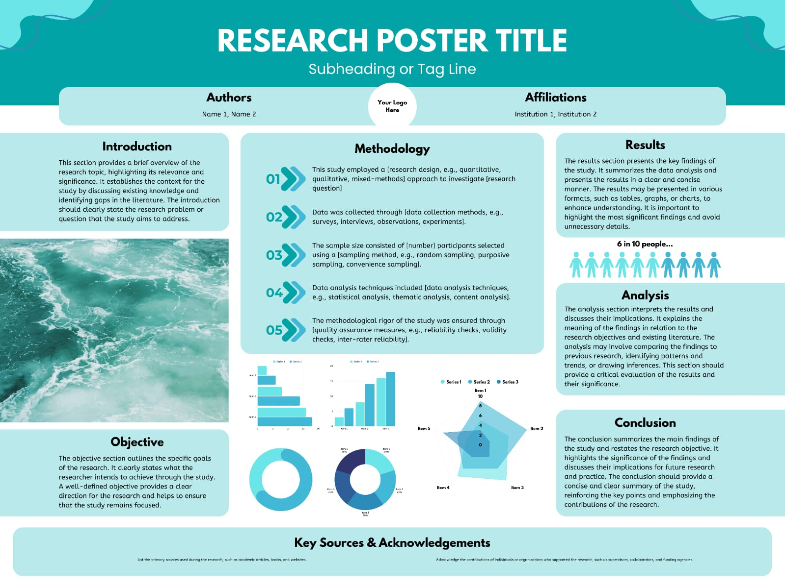
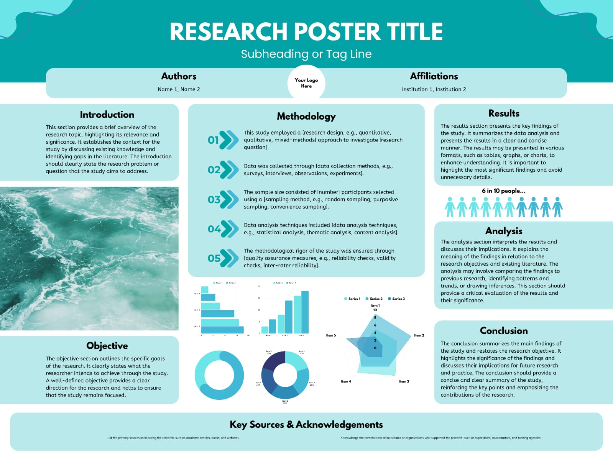
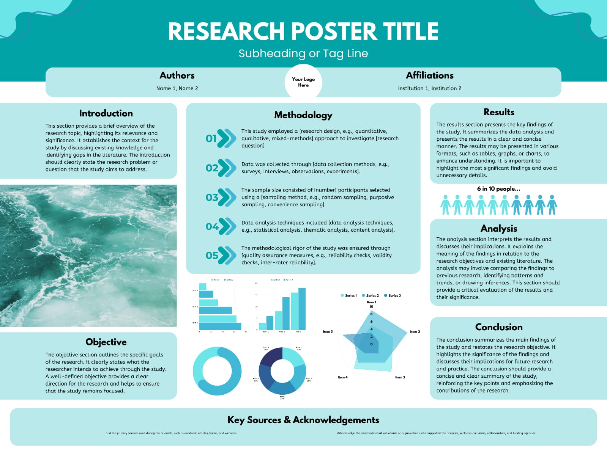

📸 Gallery

 

By Rudra Pratap Singh (Roll No: RA2511003011539)
The aim of this project is to design and implement a radar system using Arduino, ultrasonic sensors, and servo motors to detect objects and visualize their position.
#includeView Full Code on GitHubServo myServo; int trigPin = 9; int echoPin = 10; void setup() { Serial.begin(9600); myServo.attach(11); pinMode(trigPin, OUTPUT); pinMode(echoPin, INPUT); } void loop() { for(int angle=0; angle<=180; angle++) { myServo.write(angle); delay(50); long duration, distance; digitalWrite(trigPin, LOW); delayMicroseconds(2); digitalWrite(trigPin, HIGH); delayMicroseconds(10); digitalWrite(trigPin, LOW); duration = pulseIn(echoPin, HIGH); distance = (duration/2) / 29.1; Serial.print(angle); Serial.print(","); Serial.println(distance); } }
The radar sweep is visualized on Processing IDE, showing detected objects as green blips on a circular radar screen.
